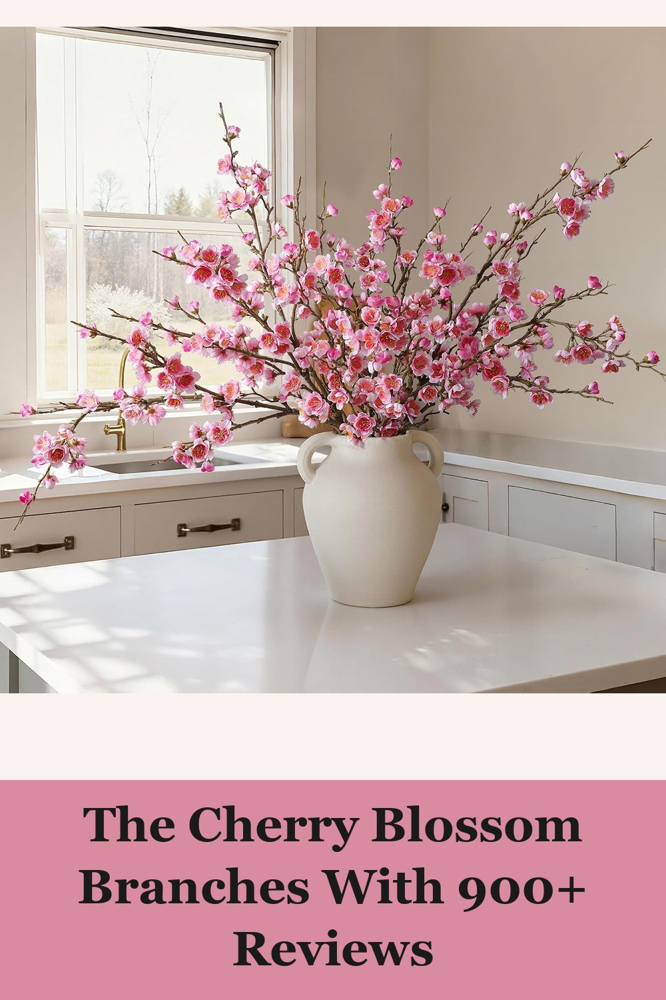
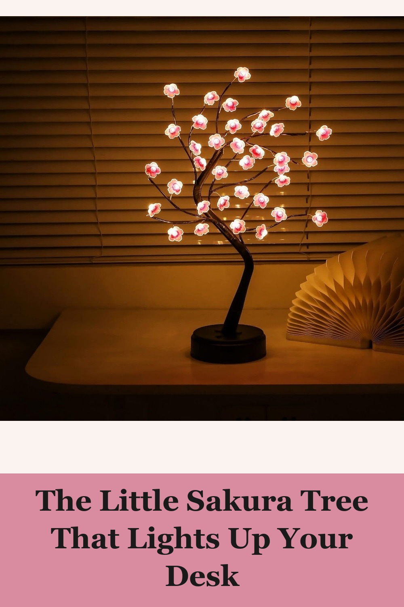
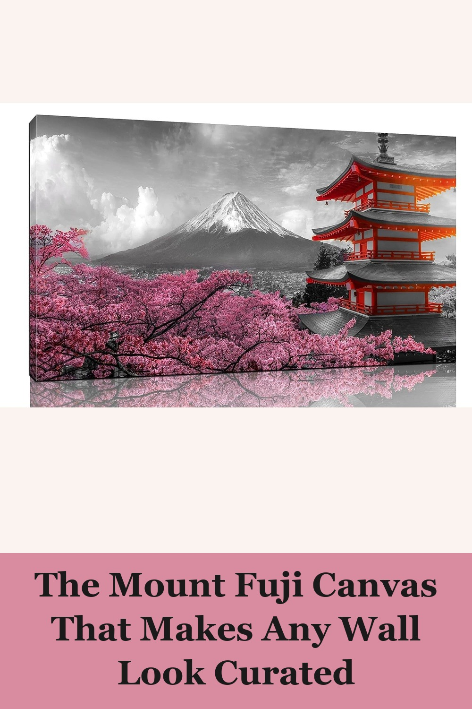

florisso 6 PCS Artificial Cherry Blossom Branches Spring Indoor Decoration, 34.45in Long Stems, Real Touch Silk, Pink
Six tall, full branches with a slight natural flex so you can fan them into any vase — real-touch silk that photographs and feels like the real thing, without the six-week bloom window.
Great to add to faux Japanese grasses in a tall container to accent an Asian foyer decor. Very realistic. Each branch is full; looks realistic. Great price and quality compared to craft retail stores.— verified Amazon buyer
View on Amazon →
Cherry Blossom Tree Lamp, 18in 36 LED Bonsai Tree Lights, Battery/USB Operated Japanese Decor Night Light
A miniature bonsai-shaped tree strung with 36 warm LEDs and pink blossom accents — touch-on, battery or USB powered, and small enough for a nightstand, desk, or bookshelf.
This lamp is so cute! It doesn't provide much light but for aesthetic purposes, it is great! I used this for my office to add a bit of decor and it was the perfect size for my desk!— verified Amazon buyer
View on Amazon →
HUBOSKN Japanese Wall Art, Cherry Blossom and Mount Fuji Canvas Print, Ready to Hang, 40in x 20in
A color-pop canvas print of Mount Fuji and a red pagoda framed by cherry blossoms — black-and-white background with the sakura left in full color, ready to hang straight out of the box.
This painting exceeded all my expectations. The colors are vibrant and the scene of the tree in bloom in front of the full moon creates a magical and relaxing atmosphere in my home. The quality of the print is excellent, giving an elegant and modern touch to the wall.— verified Amazon buyer
View on Amazon →